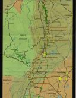
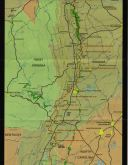

HAM-TRAILS
HAM-TRAILS
 HAM-TRAILS
HAM-TRAILS
UPDATE 2012: Please go to the 2012 page where we are forming an Appalachian Trail Ham Radio Survey 2012.
UPDATE 2009: This web page has covered several initiatives about ham radio and the Appalachian Trail over many years. New stuff is added at the top. The two most recent initiatives are the 2012 survey (above) and the Annual AT Golden Packet Test:
This is my Maryland coverage map so far. It is just a plot from file data. The red dots are APRS digipeaters and the Blue dots are voice repeaters.
The remainder of this page has NOT been updated in years. I just dusted it off and added the above paragraphs on 22 Dec 2008, and will be updating it to these latest ideas on surveying the trail when I get back from the holidays. In the mean time, here is the previous APRS version of the AT Trail initiative:
HAM-TRAILS is an amateur radio project idea to provide informal health-&-welfare type tracking of distance hikers in wilderness areas such as the Appalachian trail (or any other similar long distance trail). All that is needed is a PC conveniently located at ranger stations, stores, waypoints or any kiosk that has power and shelter for the PC which also is visited by through-hikers.
The PC would maintain a track for up to a week or more based on the speed and direction data entered by the hiker. This data would be transmitted by APRS about once an hour to update all maps to the estimated current location of these hikers. For info about this project, see APRS-AT.txt or for background information on APRS GO HERE . APRS packets can also contain weather data as well. For general information about the Appalachain Trail, see Kathy's Trail Guide and a Virtual Hike of the AT.
To see the type of data that is available to any person in the APRS system and how it is linked to a LIVE web page, simply go to the APRS Satellite WEB page and look at all the callsigns that are currently on the air. Click on one of the callsigns in the STATION LIST (not PCsat itself), to zoom in to exactly where that person is now, or click on MSGS to see their current status or message. Hikers along the trail can be reported in the same way.
MAP DISPLAY:: The main display at an APRS kiosk is the AT map showing the locations of all hikers in the system. It can be zoomed to anywhere along the 2000 mile route, but defaults to a map display extending about 1 days walk north and south of the kiosk.
HIKER DATA: Hikers that want to update their data at any APRS kiosk along the trail, first enter their 6 digit identifier. This is the "callsign" that identifies them uniquely to the system and to each other or anyone looking at the APRS maps. Their ID and a password is generated from these data items:
ADDITIONAL DATA: When they first enter the system, they enter additional data to help APRS-AT know how to track them. These items are included in their object packet to allow the full system to keep track of them.
HAM RADIO RULES: Just as NTS and other amateur radio services have offered the public a complementary communications service for brief messages to demonstrate our ability to handle health-and-welfare traffic, this HAM-TRAILS system provides a similar communications outreach and public education objective. The PC operates under automatic control of the sponsoring HAM. Each APRS PC has a descriptive placard which also has local HAM club information on it. The software running on the PC is a special version of APRSdos that autmoatically dead-reckons these hikers along the trial. See details of APRSat.

 


---[FULL SIZE]--- |
---[FULL SIZE]--- |
---[FULL SIZE]--- |
---[FULL SIZE]--- |
---[FULL SIZE]--- |
The Problem is finding appropriate places to place these APRS PC's. That is where I need your help. Here is a list of possible sites along the Appalachian trail that might be suitable. I need your input. Click on the [FULL SIZE] labels above to see the full size maps prepared by Brandon Rhodes and see if you recognize any convenient places. Then tell me so I can update the TEXT LIST above...
Each PC operates under automatic digital control usually from high places along the trail at low power with only two hops to get to the next site. This way these data packets do not collide with any normal higher priority APRS packets, but do get relayed if the channel is clear. The hikers have no control over the operation of the packet system. They can only enter their personal data or view other's data to find friends along the trail.
VOICE REPEATERS along the AT:
If you do carry your HT along the trail, Beau Bushor N1MJD has prepared an excellent list in Trail order of all the voice repeaters you can hit along the trail. See their Ham Guide.
OLDER HARDWARE IDEA: Placing PC's along the trail was the easy quick-start way to bring APRS tracking to the trails. But the long term objective could be to place small low power solar powered devices in each of the isolated shelters along the trail where the hikers rest each evening. See the complete APRSdos TEXT file. The idea was to place little call boxes every 5 to 10 miles along the trial for simple keypad entry of welfare data by hikers. See the old idea which we douibt will ever fly, so it remains here for historical purposes but is OBSOLETE. Only the idea of PC's at protected locations (all of the above) seems viable at this point.
Return to the APRS HOMEPAGE or SiteMap.
{kind=link}
![---[FULL SIZE]---](hamtrails/at1.jpg){kind=link}
![---[FULL SIZE]---](hamtrails/at2.jpg){kind=link}
![---[FULL SIZE]---](hamtrails/at3.jpg){kind=link}
![---[FULL SIZE]---](hamtrails/at4.jpg){kind=link}
![---[FULL SIZE]---](hamtrails/at5.jpg){kind=link}